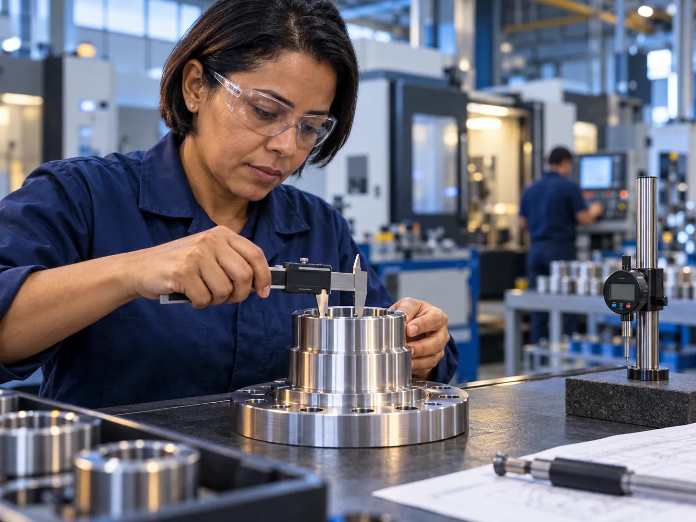
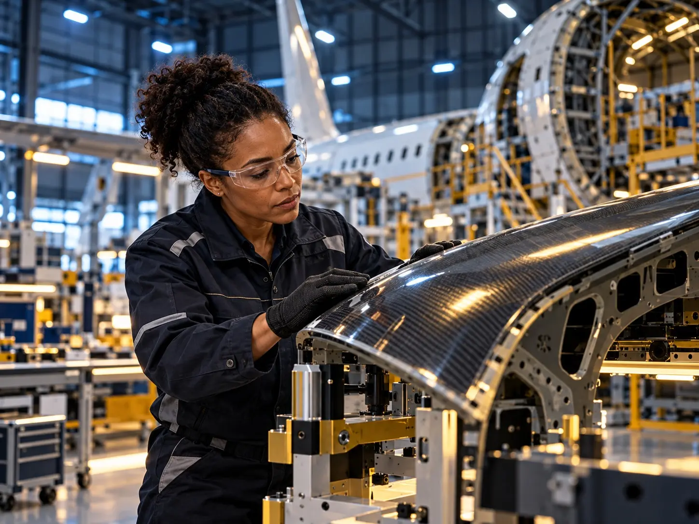
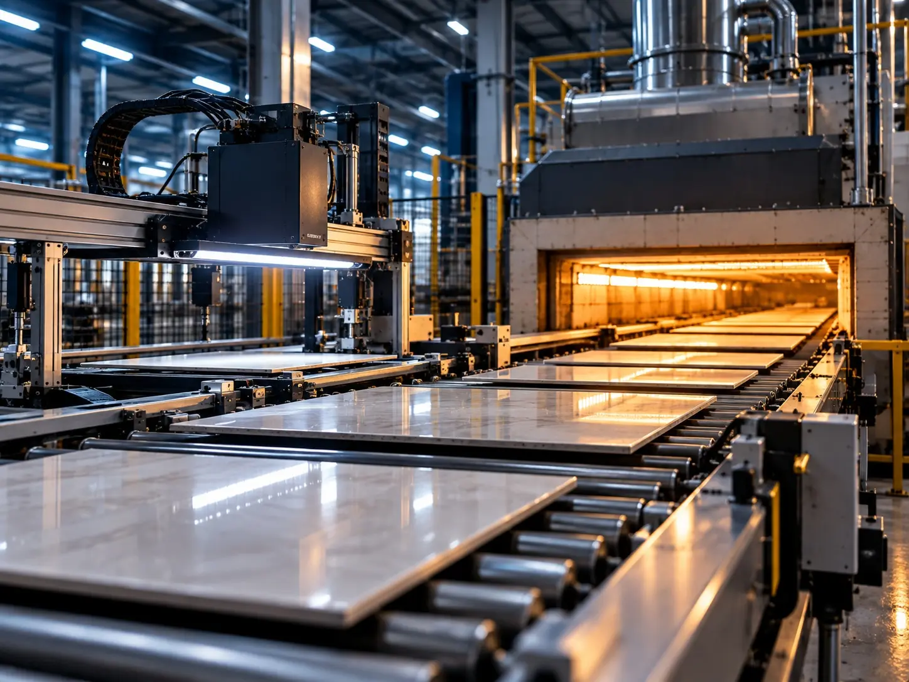
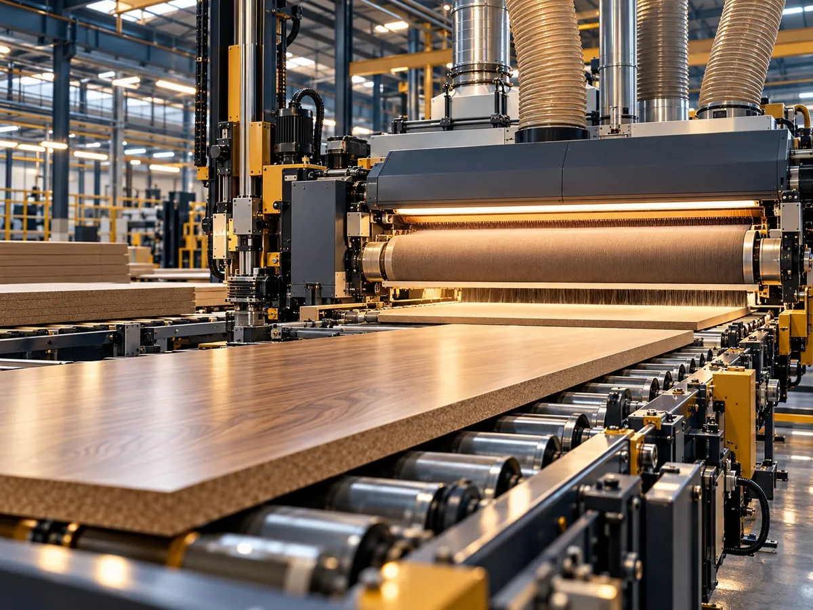
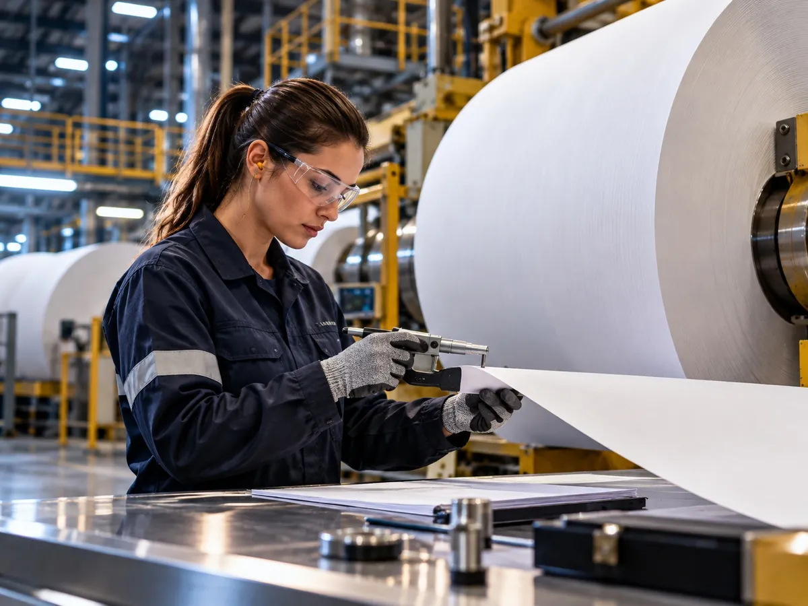
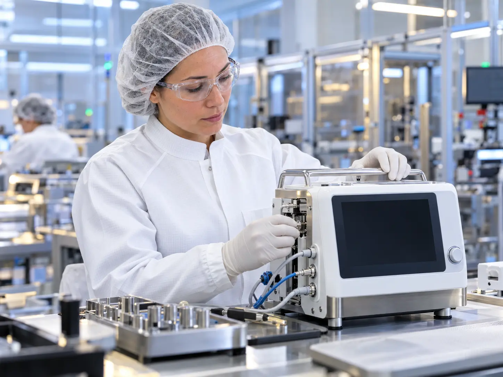
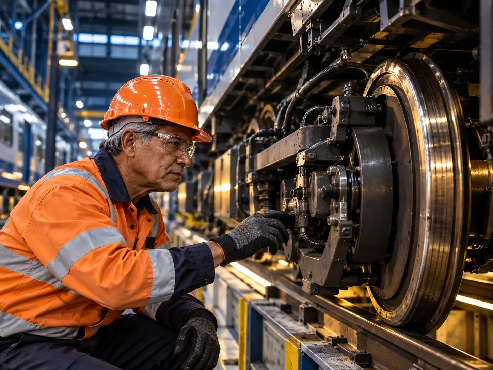
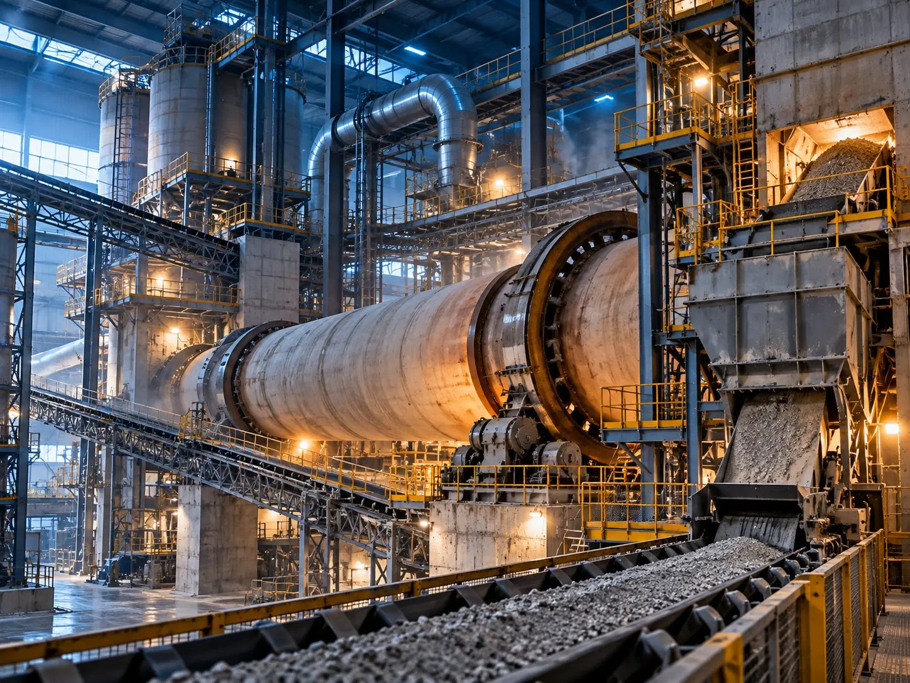
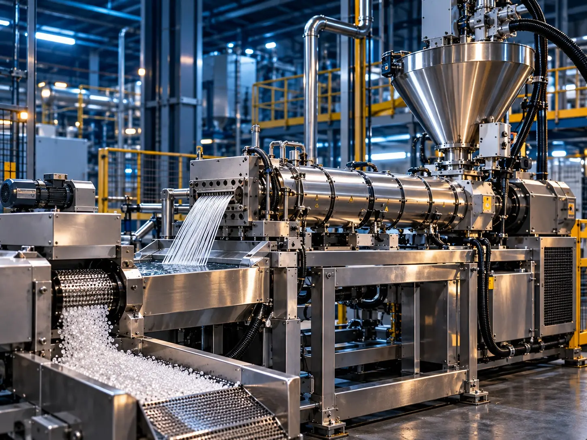

Setores
Indústrias em que concentramos atenção
Nosso trabalho foi pensado para empresas B2B de operação técnica e venda consultiva. Estes são os setores que priorizamos, cada um com o seu jeito de comprar.
Mapa de setores
Onde a comunicação técnica pesa na decisão de compra
Escolha um setor para ver como o comprador decide e o que costumamos construir para cada realidade.
 01Metalmecânica e usinagem
01Metalmecânica e usinagem 02Automação e robótica
02Automação e robótica 03Automotivo e autopeças
03Automotivo e autopeças 04Metalurgia e siderurgia
04Metalurgia e siderurgia 05Móveis, madeira e painéis
05Móveis, madeira e painéis 06Embalagens, papel e plásticos
06Embalagens, papel e plásticos 07Química, petróleo e processos
07Química, petróleo e processos 08Saneamento e utilidades
08Saneamento e utilidades 09Farmacêutico e equipamentos médicos
09Farmacêutico e equipamentos médicos 10Construção e infraestrutura
10Construção e infraestrutura 11Energia e renováveis
11Energia e renováveis 12Agronegócio
12Agronegócio
Setor 01
Metalmecânica e usinagem
Peças sob desenho, tolerância e prazo. O comprador precisa confiar na capacidade da fábrica antes de pedir uma cotação.
- Parque de máquinas, materiais e tolerâncias apresentados de forma consultável
- Controle de qualidade e certificações como prova de confiança
- Formulário de cotação que já recebe desenho, material e quantidade
Para serviço de usinagem, caldeiraria, ferramentaria ou peças sob encomenda.
Ver a página do setor
Setor 02
Automação e robótica
Soluções de integração têm venda consultiva e decisão com vários perfis técnicos. É preciso explicar aplicação, benefício e integração sem excesso de jargão.
- Aplicações e segmentos atendidos em páginas separadas, por problema do cliente
- Conteúdo técnico que explica o funcionamento de forma direta
- Vídeos curtos da solução em operação
Para integradores, fabricantes de máquinas, robótica e visão computacional.
Ver a página do setorSetor 03
Automotivo e autopeças
Cadeias com homologação, volume e exigências técnicas rigorosas, em que a clareza da proposta pesa na escolha do fornecedor.
- Processos, certificações e capacidade em destaque
- Páginas por linha de produto e por tipo de cliente
- Conteúdo para quem avalia e homologa fornecedores
Para fornecedores de componentes, conjuntos e serviços para montadoras e sistemistas.
Conversar sobre este setor
Setor 04
Metalurgia e siderurgia
Capacidade produtiva, normas e aplicações apresentadas de forma objetiva para quem compra por especificação.
- Portfólio por liga, norma e aplicação
- Conteúdo sobre processos e controle de qualidade
- Páginas de contato por tipo de demanda
Para fundições, forjarias, laminadores e distribuidores de metais.
Conversar sobre este setor
Setor 05
Móveis, madeira e painéis
Fabricantes e fornecedores que vendem para o B2B e precisam mostrar linhas, acabamentos e capacidade com clareza.
- Catálogo digital por linha, espessura e acabamento
- Fotografia que mostra o processo e o padrão de qualidade
- Canais claros para revendas, projetistas e indústrias
Para fábricas de painéis, componentes e móveis planejados com venda para empresas.
Conversar sobre este setor
Setor 06
Embalagens, papel e plásticos
Processos contínuos e portfólio técnico que pedem comunicação precisa para distribuidores e grandes compradores.
- Especificações e aplicações organizadas em páginas de consulta
- Conteúdo sobre sustentabilidade e conformidade, quando aplicável
- Materiais para o time comercial apresentar o portfólio
Para fabricantes de filmes, embalagens flexíveis, papel e transformadores plásticos.
Ver a página do setor
Setor 07
Química, petróleo e processos
Equipamentos e serviços críticos, com decisão técnica e cuidado com segurança. A credibilidade vem de informação clara e verificável.
- Linhas de produto e serviços com dados técnicos acessíveis
- Conteúdo sobre manutenção, segurança e confiabilidade
- Páginas por aplicação e por tipo de planta
Para fabricantes de bombas, válvulas, instrumentação e prestadores de serviço para plantas de processo.
Conversar sobre este setorSetor 08
Saneamento e utilidades
Contratos de longo prazo, exigências regulatórias e muitos envolvidos na decisão. Informação organizada acelera a análise do comprador.
- Soluções por etapa do tratamento e por porte da operação
- Material técnico e documentação fáceis de encontrar
- Contato dedicado para licitações e projetos
Para fornecedores de equipamentos, insumos e serviços para estações de tratamento e utilidades.
Conversar sobre este setorSetor 09
Farmacêutico e equipamentos médicos
Normas rigorosas e comunicação regulada. Cada texto precisa ser preciso, e a documentação pesa na decisão de compra.
- Texto técnico revisado com a sua equipe técnica e regulatória
- Documentação e certificações bem organizadas
- Páginas por linha, aplicação e tipo de cliente
Para fabricantes e fornecedores de equipamentos para produção farmacêutica e para a área da saúde.
Conversar sobre este setor
Setor 10
Construção e infraestrutura
Obras e fornecimentos com vários decisores, prazos exigentes e comparação rigorosa de propostas.
- Portfólio de obras e fornecimentos organizado por tipo
- Capacidade técnica, segurança e certificações em evidência
- Conteúdo para projetistas, construtoras e compradores
Para fornecedores de estruturas, materiais, equipamentos e serviços para construção pesada.
Conversar sobre este setor
Setor 11
Energia e renováveis
Projetos de longo prazo e decisões com vários envolvidos, nos quais a credibilidade se constrói em cada ponto de contato.
- Soluções por tipo de ativo e por etapa do projeto
- Conteúdo técnico para engenharia e compras
- Materiais para o time comercial em negociações longas
Para fornecedores de componentes, manutenção e serviços para geração e transmissão de energia.
Conversar sobre este setorSetor 12
Agronegócio
Ciclos longos, decisão técnica e muita confiança. Ajudamos fabricantes de máquinas, armazenagem, insumos e agroindústrias a chegar ao comprador certo.
- Máquinas e implementos agrícolas
- Armazenagem e beneficiamento de grãos
- Insumos, tecnologia de campo, agroindústria e cooperativas
Para fabricantes e prestadores que vendem para produtores, cooperativas e agroindústrias.
Ver a página do setor
Também no radar
Outros segmentos que acompanhamos
Setores industriais em que a comunicação técnica também faz diferença na decisão de compra.
Logística industrial
Operações de armazenagem e movimentação em que fornecedores técnicos precisam ser bem compreendidos.

Mineração
Equipamentos pesados e ciclos longos de decisão, com forte peso de segurança e confiabilidade.

Cimento e minerais
Plantas contínuas e fornecedores especializados, nos quais a referência técnica orienta a escolha.

Transformação de plásticos
Fabricantes de máquinas, moldes e insumos que precisam mostrar capacidade e aplicação.
Não encontrou o seu setor? Se a sua empresa vende uma solução técnica para outras empresas, conversamos sobre o seu caso.
Próximo passo
O seu setor tem um jeito próprio de comprar
Conte como a sua empresa vende hoje. No diagnóstico indicamos por onde começar.
Ou comece pelo diagnóstico online: oito perguntas, cerca de três minutos, sem cadastro.
Prefere começar pelo material? Baixe o checklist do site industrial (PDF).